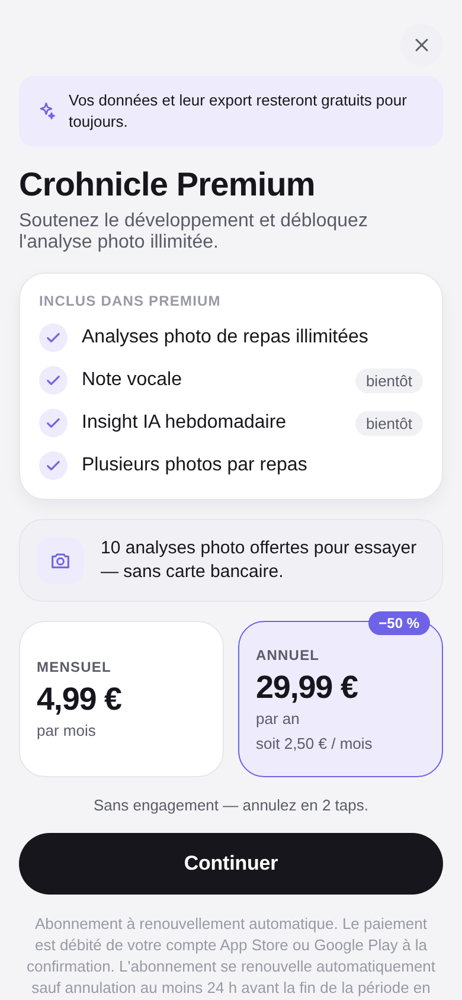
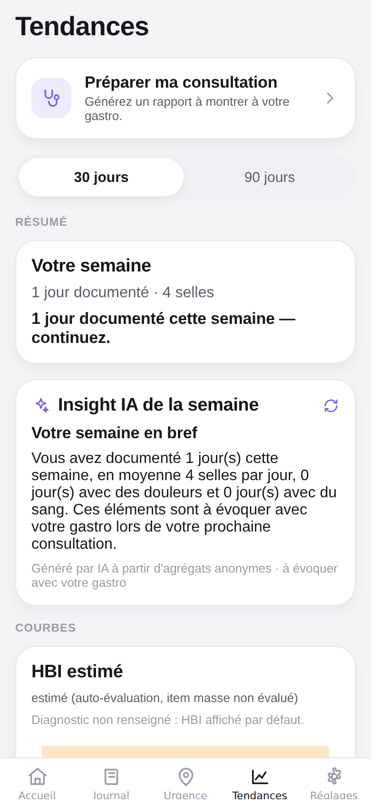

Documentez votre MICI en secondes par jour
Un geste, quelques secondes. Comprenez vos déclencheurs et arrivez armé·e chez votre gastro.
Aucun compte requis · Aucune donnée de santé ne quitte votre appareil.


3 taps, 5 secondes
Le geste le plus fréquent est le plus rapide. Une selle se note en trois taps, sans jamais ouvrir un formulaire interminable.
- Échelle de Bristol illustrée, votre dernier choix pré-sélectionné.
- Urgence, sang et douleur en options — jamais obligatoires.
- Brouillon auto-sauvegardé à chaque tap : votre saisie n'est jamais perdue, même si l'app se ferme.

Une photo, vos déclencheurs
Prenez votre assiette en photo. L'analyse détecte les déclencheurs — FODMAP, lactose, gluten, friture, épices, fibres… — pas les calories. Le suivi MICI, pas un régime.
- Ingrédients pré-remplis, niveau de confiance affiché en clair.
- « Corriger » en une phrase : « c'est du couscous, pas du riz ».
- Jamais d'échec silencieux : hors-ligne, on bascule sur la saisie manuelle.

Vos tendances, sans anxiété
Semaine après semaine, Crohnicle relie vos logs en tendances lisibles. Des courbes claires, jamais un score anxiogène.
- Score d'activité HBI (Crohn) ou SCCAI (RCH), auto-évalué.
- Résumé « votre semaine » et associations alimentaires probables.
- Série gelée pendant les poussées : on ne culpabilise jamais.

Un rapport propre pour votre gastro
La fonction que les patients réclament partout : un PDF clair à remettre en consultation. Gratuit pour toujours.
- Période 1, 3 ou 6 mois, courbes et tableaux semaine par semaine.
- « 3 points à aborder avec votre gastro », générés localement.
- Identité facultative : rien n'est obligatoire, tout reste sur l'appareil.

La carte d'urgence, toujours prête
Le sujet n°1 de la communauté francophone. Une carte plein écran à montrer pour obtenir un accès aux toilettes — en 2 taps, même hors-ligne.
- 5 langues : français, anglais, espagnol, allemand, italien.
- Fonctionne sans réseau, sans compte, sans attente.
- Toilettes à proximité et lien vers la Carte Urgence Toilettes de l'afa.
Nos engagements
Nos 4 lois
Chaque décision de Crohnicle se tranche dans cet ordre. La confiance est le produit.
Vos données restent chez vous
Vos données de santé restent sur votre appareil. Pas de compte obligatoire, pas d'analytics tiers. Rien ne part sans votre geste.
Zéro friction
Toute action tient en moins de 10 secondes et 3 taps. Aucun champ obligatoire.
Zéro perte de données
Brouillon auto-sauvegardé à chaque tap, sauvegarde en un geste. Votre historique est sacré.
Jamais culpabilisant
Pas de score anxiogène, série gelée pendant les poussées, ton toujours bienveillant.
Prix honnête
Le cœur est gratuit. À vie.
Prix affichés d'emblée, sans engagement, jamais de second flux d'achat.
Gratuit
Le suivi complet, sans limite de temps.
- Tous les logs : selles, symptômes, repas, traitements
- Journal, tendances, scores HBI / SCCAI
- Associations alimentaires
- Export médecin PDF
- Sauvegarde & restauration de vos données
- Carte d'urgence toilettes multilingue
Premium
−50 % à l'annéeou 29,99 € / an — soit 2,50 € / mois
- Analyses photo de repas illimitées
- Plusieurs photos par repas (assiette + étiquette)
- Note vocale bientôt
- Insight IA hebdomadaire bientôt
Sans engagement — annulez en 2 taps. Un remboursement, une question ? Écrivez à un humain.
Vos données et leur export resteront gratuits pour toujours.
Essayer la démo web
Crohnicle stocke vos données localement grâce à une base SQLite dans le navigateur, qui exige une isolation que l'hébergement statique de cette vitrine ne permet pas. Pour garder une démo honnête et fonctionnelle, elle se lance en local :
git clone · npm ci · npm run web
Questions fréquentes
Où sont stockées mes données ?
Sur votre appareil, uniquement. Crohnicle n'a pas de compte obligatoire et n'envoie aucune donnée de santé sur un serveur. L'analyse photo (Premium) passe par un service qui traite l'image puis l'oublie — elle n'est jamais stockée. Vous pouvez exporter et sauvegarder vos données quand vous voulez.
C'est vraiment gratuit ?
Oui. Tout le cœur de l'app — logs, journal, tendances, scores, associations alimentaires, export médecin, sauvegarde — est gratuit à vie. Premium débloque uniquement les analyses photo illimitées (10 offertes sans carte bancaire) et, bientôt, la note vocale et l'insight hebdo.
C'est pour la maladie de Crohn ou la RCH ?
Les deux. Crohnicle s'adapte à votre profil : score HBI pour la maladie de Crohn, SCCAI pour la rectocolite hémorragique. L'app gère aussi les MICI indéterminées et le suivi avant diagnostic.
Est-ce un dispositif médical ?
Non. Crohnicle est un outil de suivi et de préparation à la consultation. Les scores et tendances sont des auto-évaluations à visée informative. Il ne pose pas de diagnostic et ne remplace pas l'avis de votre médecin.
Quand sera-t-elle sur les stores ?
Bientôt. Crohnicle est en préparation pour l'App Store et Google Play. En attendant, le projet est open source : vous pouvez suivre son avancement et lancer la démo en local.